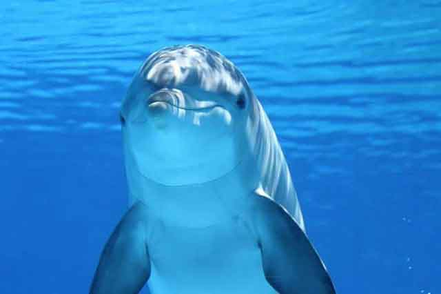

돌고래의 지능! 어느 정도일까요?
돌고래의 지능이 뛰어나다는 사실은 대부분 잘 알고 계실 거예요. 그래서 인간과 유사한 행동을 하거나 인간의 말을 알아듣고 훈련이 가능하기도 하죠. 돌고래에 대한 연구가 계속되고 있고, 그 안에서 발견된 사실은 돌고래의 지능이 상당히 높다는 결론이었고 그 행동은 인간과 유사한 면이 많다는 것을 보여줬습니다. 돌고래의 지능! 그들의 행동은 어디까지 가능한 것일까요?
1) 무리 동물 돌고래! 협동합니다.
돌고래는 대부분 무리 지어 이동합니다. 단순히 무리를 짓는 것이 아닌 서로 간의 협동을 위해 그리고 서로에게 의존하고 도움을 줍니다. 함께 이동해서 먹이를 찾거나 위험에서 서로를 구해주고 돌봐주는 행위를 보이는 것이죠.
2) 사냥 방법을 전수합니다.
인류의 번영과 생존을 위해서 인간은 자식을 낳고 그 자식에게 생존의 법칙을 전수하려고 합니다. 마찬가지로 돌고래도 새끼를 낳고 새끼에게 사냥 방법을 알려줍니다. 또, 단순한 사냥 방법이 아닌 해양 생태계 속의 지형물을 활용한 사냥 방법과 무리 지어 사냥하는 방법 등 다양한 방법을 전수합니다.
3) 무리 짓는 것이 강하다는 것을 인식합니다.
인간은 사회적 동물이라는 것을 인식하듯 돌고래도 무리 지어 생활하는 것이 오랜 생존에 꼭 필요하다는 것을 깨닫고 있습니다. 사냥할 때도, 사냥한 먹잇감을 나눌 때도 그들은 협동하고 상호의존합니다. 무리 전체가 공평하게 먹이를 나누고 또 먹이가 부족할 때는 추가적인 사냥에 나섭니다.
4) 서로 간의 대화가 가능합니다.
돌고래에게도 서로 간의 언어가 있습니다. 대화를 나누고 의견을 나누기 위해 소리를 활용하며, 그 소리는 각자만의 방법으로 조금씩 차이가 있습니다.
5) 돌고래에게는 모성애가 있습니다.
인간과 가장 유사하면서도 다른 동물과는 구별되는 특징으로 모성애가 있다는 것입니다. 자기 새끼는 물론 다른 새끼의 자식도 돌보는 경향이 있는데, 이는 다른 동물과는 구별되는 특징이라 할 수 있습니다. 특히, 인간과는 상당히 유사한 특징이라는 것이죠!
6) 행복을 인지합니다.
돌고래는 나이를 구분하지 않고 함께 노는 것을 좋아합니다. 단순히 생존을 위해 수영하는 것이 아닌 재미와 유희를 즐기기 위한 수영, 놀이를 즐깁니다. 이것은 단순히 생존을 위한 행동이 아닌 돌고래도 행복함과 즐거움을 느끼기 위한 행동으로 볼 수 있습니다.
돌고래는 나이를 구분하지 않고 함께 노는 것을 좋아합니다. 단순히 생존을 위해 수영하는 것이 아닌 재미와 유희를 즐기기 위한 수영, 놀이를 즐깁니다. 이것은 단순히 생존을 위한 행동이 아닌 돌고래도 행복함과 즐거움을 느끼기 위한 행동으로 볼 수 있습니다.
[출처] 돌고래의 지능! 어느 정도일까요? | 작성자 브런치